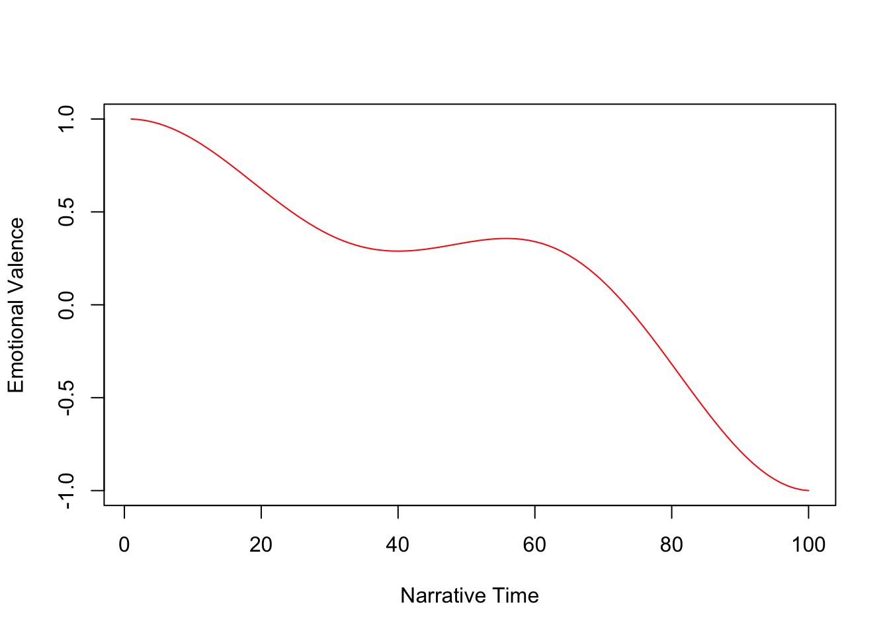
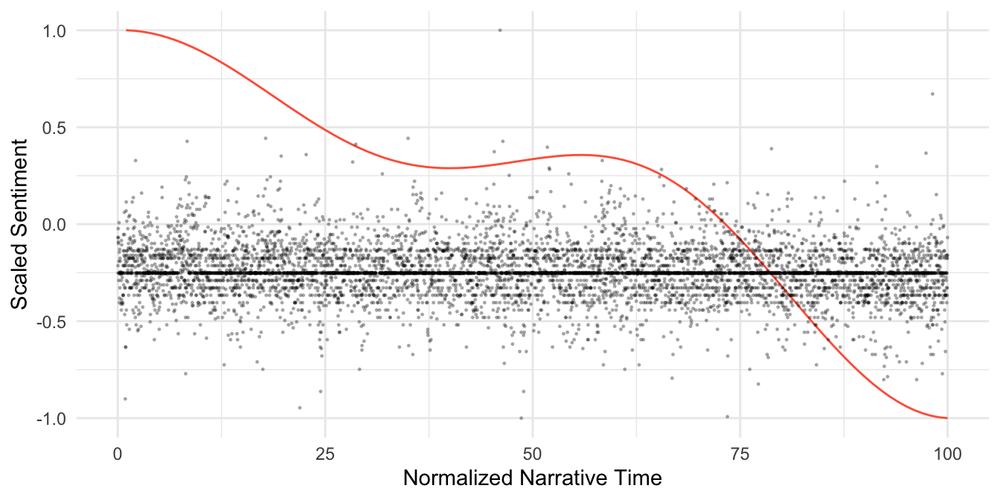

library(gt)
library(syuzhet)
library(tidyverse)12 Texts, Algorithms, and Black-Boxes
We’re going to start by unpacking the controversy regarding the syuzhet R package. (The readings are short and posted on Canvas, if you haven’t looked at them already.) This is a useful exercise, I think, because it gets to some foundational issues in text analysis–you’re going to encounter them in your work so they’re worth considering from the beginning.
12.1 Load packages and data
Load the package that we’ll use in this short lab.
Load data from file:
load("../data/sentiment_data.rda")The novels that Jockers uses as examples are included as data, which can be accessed as sentiment_data. There are 4 novels, and we’ll check their names stored in the doc_id column.
For this demonstration, we’ll be using Madame Bovary.
| doc_id |
|---|
| madame_bovary |
| portrait_artist |
| ragged_dick |
| silas_lapham |
12.2 Prep the data and calculate sentiment
Next, we do some simple cleaning using str_squish from the stringr package. Then we’ll split the the novel into sentences and calculate a sentiment score for each.
# str_squish() is a useful function from readr for getting rid of extra spaces, carriage returns, etc.
mb <- str_squish(sentiment_data$text[1])
# chunk the novel into sentences
mb_sentences <- get_sentences(mb)
# calculate and return sentiment scores
mb_sentiment <- get_sentiment(mb_sentences)Let’s check the data:
| mb_sentiment |
|---|
| 1.20 |
| 0.25 |
| 0.00 |
| 1.50 |
| 1.05 |
| 1.20 |
| 1.00 |
| -0.25 |
| 0.00 |
| 0.40 |
12.3 Transforming the data
The next step is to transform the data. Originally, Jockers used a Fourier transformation, which he described as follows:
Aaron introduced me to a mathematical formula from signal processing called the Fourier transformation. The Fourier transformation provides a way of decomposing a time based signal and reconstituting it in the frequency domain. A complex signal (such as the one seen above in the first figure in this post) can be decomposed into series of symmetrical waves of varying frequencies. And one of the magical things about the Fourier equation is that these decomposed component sine waves can be added back together (summed) in order to reproduce the original wave form–this is called a backward or reverse transformation. Fourier provides a way of transforming the sentiment-based plot trajectories into an equivalent data form that is independent of the length of the trajectory from beginning to end. The frequency domain begins to solve the book length problem.
This introduced some unwanted outcomes, namely that the resulting wave-forms must begin and end at the same point. The updated function uses a Discrete Cosine Transform (DCT), which is commonly used in data compression.
mb_dct <- get_dct_transform(mb_sentiment, low_pass_size = 5, x_reverse_len = 100, scale_vals = FALSE, scale_range = TRUE)
mb_dct <- data.frame(dct = mb_dct) %>%
rownames_to_column("time") %>%
mutate(time = as.numeric(time))Check the data:
| time | dct |
|---|---|
| 1 | 1.0000000 |
| 2 | 0.9974733 |
| 3 | 0.9924392 |
| 4 | 0.9849363 |
| 5 | 0.9750217 |
| 6 | 0.9627711 |
| 7 | 0.9482778 |
| 8 | 0.9316520 |
| 9 | 0.9130198 |
| 10 | 0.8925224 |
Finally, the values can be plotted.
plot(mb_dct, type ="l", xlab = "Narrative Time", ylab = "Emotional Valence", col = "red")
12.4 Transformed vs. non-transformed data
In order to better compare the before vs. after, let’s create a data frame in which we normalize the narrative time values and scale the sentiment scores.
mb_df <- mb_sentiment %>%
data.frame(sentiment = .) %>%
rownames_to_column("time") %>%
mutate(time = as.numeric(time)) %>%
mutate(time = time/length(mb_sentiment)*100) %>%
mutate(sentiment = 2 * (sentiment - min(sentiment))/( max(sentiment) - min(sentiment)) -1)Now, those values can be plotted with the values extracted from DCT.
ggplot(data=mb_dct, aes(x=time, y=dct)) +
geom_line(colour= "tomato") +
geom_point(data=mb_df, aes(x=time, y=sentiment), alpha=0.25, size=.25) +
xlab("Normalized Narrative Time") + ylab("Scaled Sentiment") +
theme_minimal()
Pause for Lab Set Question
Complete Task 1 in Lab Set 4.